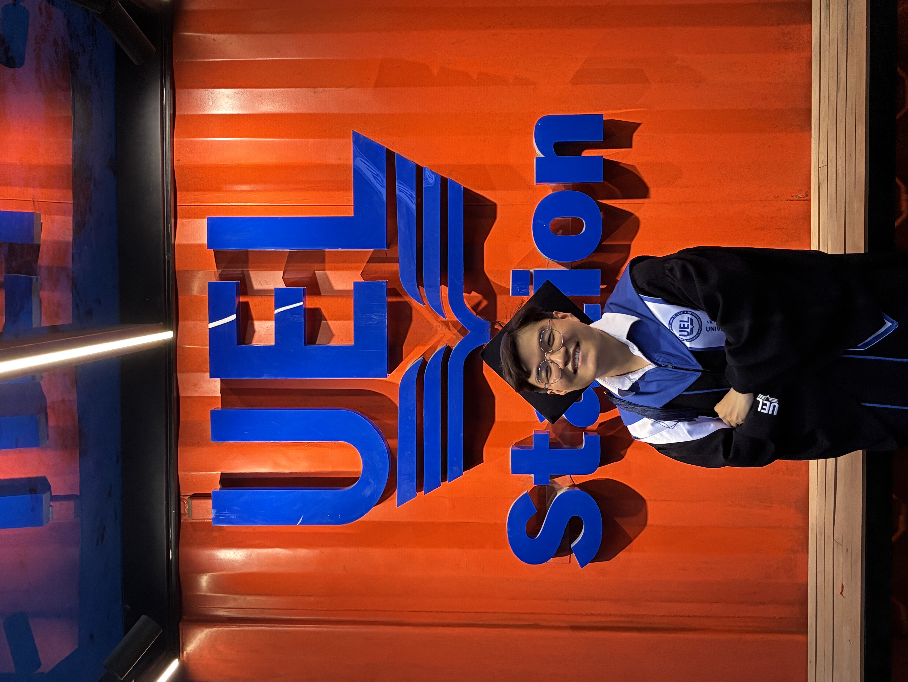

I turn messy tables into dashboards people actually trust.
Management Information Systems student at the University of Economics and Law (VNU HCMC), with hands-on experience across SQL, Power BI, and data modeling. I've spent the last year turning raw transactions — bank accounts, purchase orders, sales pipelines — into schemas and dashboards that hold up under real business questions.

Major: Management Information Systems (MIS)
The same layered architecture I build for clients shows up in how I've grown — from raw extraction to polished, decision-ready dashboards.
Three end-to-end builds — from business question, to data model, to dashboard.
Investigated a critical decline in CASA balances for a retail bank. Modeled 110K+ customers and built RFM segmentation and cohort analysis to pinpoint exactly where, when, and which customer tiers were driving the drop — then built Power BI dashboards with advanced DAX to track net cash flow, cross-selling, and credit card utilization.
Designed and implemented a BI solution supporting purchasing and operations. Analyzed business requirements to design a data warehouse and KPI matrix, cleaned data with Python and SQL Server, then built an SSIS ETL pipeline feeding Power BI dashboards with DAX for tracking data accuracy.
Transformed raw transactional data into actionable sales insight by building a Bronze–Silver–Gold data architecture on Azure Data Factory and Databricks, then designed a data model and Power BI dashboards with DAX measures for sales performance analysis.
Color-coded the same way I color-code a pipeline — analysis in, engineering underneath, BI on top.